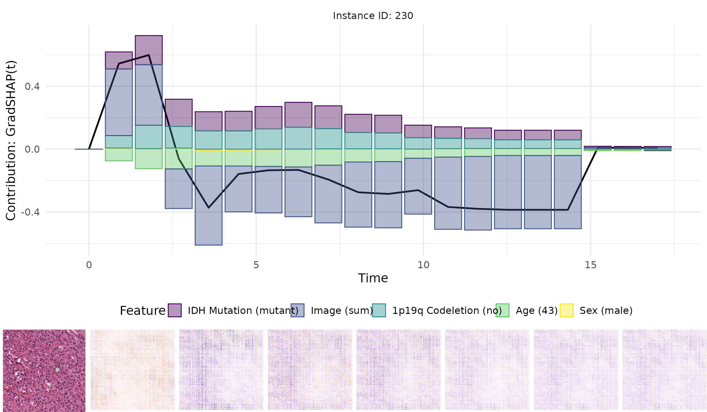
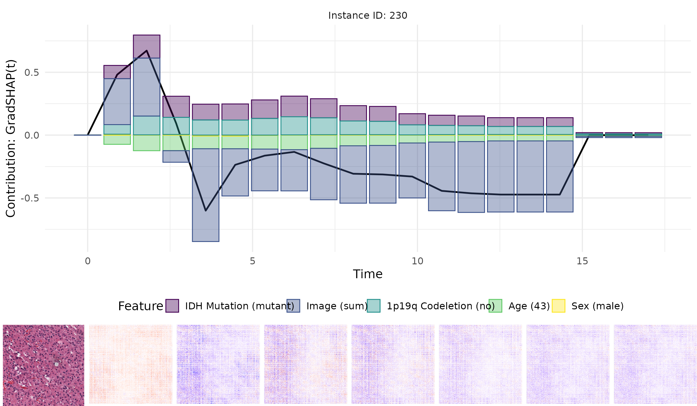
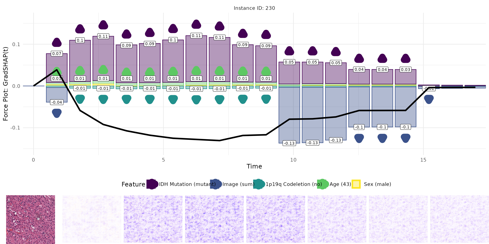
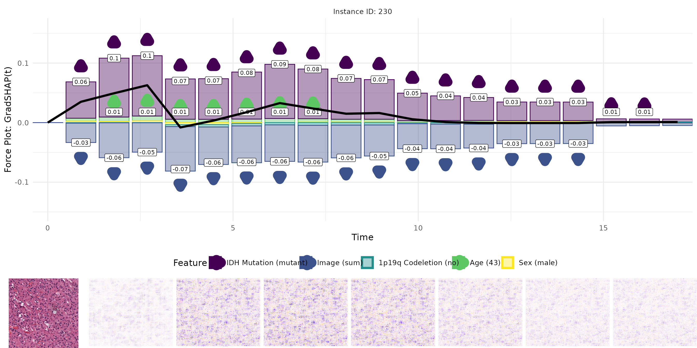

Example on Real Multi-modal Medical Data
multimodal.RmdThis vignette demonstrates how to apply gradient-based attribution methods to a multi-modal survival model trained on real medical data. Specifically, we explore the interpretability of a DeepHit-style neural network that jointly processes tabular and image-based features. The model is evaluated on a set of test instances and visualized using various attribution techniques.
Note: Since the images used in this example are of
size (3, 226, 226), running this example may take a while
or too much memory, especially for the GradSHAP(t) and
IntGrad(t) methods if too many samples are used. To avoid
this, we recommend using smaller sample sizes or number of integration
points.
Setup
We begin by loading the necessary libraries and setting the seeds to
ensure reproducibility. The helper functions used for image processing
and visualization are sourced from a separate utility script which can
be found in the vignettes/articles/real_data directory or
online in
the GitHub repository.
library(Survinng)
library(torch)
library(torchvision)
library(ggplot2)
library(data.table)
library(cowplot)
library(dplyr)
#>
#> Attaching package: 'dplyr'
#> The following objects are masked from 'package:data.table':
#>
#> between, first, last
#> The following object is masked from 'package:Survinng':
#>
#> explain
#> The following objects are masked from 'package:stats':
#>
#> filter, lag
#> The following objects are masked from 'package:base':
#>
#> intersect, setdiff, setequal, union
library(here)
#> here() starts at /home/runner/work/Survinng/Survinng
# Load helper functions
source(here("vignettes/articles/real_data/utils.R"))
# Set seeds for reproducibility
set.seed(42)
torch_manual_seed(42)Load model and metadata
We first load the trained model along with its corresponding metadata, including the number of outputs for the image and joint components, whether a bias term was included, and the number of tabular features. The model’s performance is briefly summarized using two commonly used survival metrics: the Concordance index and the Integrated Brier Score.
After restoring the model’s state dictionary, we replicate the multi-modal network structure consisting of a ResNet34 backbone for the image branch and a linear transformation for the tabular input.
All required files are available in the
vignettes/articles/real_data directory or online in
the GitHub repository folder.
# Load model metadata
model_metadata <- read.csv(here("vignettes/articles/real_data/metadata.csv"))
n_img_out <- model_metadata$n_img_out
n_out <- model_metadata$n_out
out_bias <- as.logical(model_metadata$out_bias)
n_tab_feat <- model_metadata$Number.of.tabular.features
# Show performance results
model_metadata[, c("Concordance", "Integrated.Brier.score")]
#> Concordance Integrated.Brier.score
#> 1 0.7133996 0.0919935
# Load model state dict
model_state_dict <- load_state_dict(here("vignettes/articles/real_data/model.pt"))
# Replicate model
net_image <- torchvision::model_resnet34(num_classes = n_img_out)
model <- MultiModalModel(net_image, tabular_features = rep(1, n_tab_feat),
n_out = n_out, n_img_out = n_img_out, out_bias = out_bias)
# Load model state dict
model <- model$load_state_dict(model_state_dict)
model$eval()
model
#> An `nn_module` containing 21,518,292 parameters.
#>
#> ── Modules ─────────────────────────────────────────────────────────────────────
#> • net_images: <resnet> #21,416,000 parameters
#> • fc1: <nn_linear> #66,816 parameters
#> • fc2: <nn_linear> #32,896 parameters
#> • relu: <nn_relu> #0 parameters
#> • drop_0_3: <nn_dropout> #0 parameters
#> • drop_0_4: <nn_dropout> #0 parameters
#> • out: <nn_linear> #2,580 parametersLoad data
Next, we prepare the input data for evaluation and explanation. This includes:
- A tabular dataset containing numeric predictors.
- Corresponding image files from the test set.
Images are preprocessed using standard transformations (center cropping and normalization) and stacked into a single tensor. The tabular inputs are converted into a Torch tensor to be compatible with the model input format.
Note: The tabular and image data can be found in the
vignettes/articles/real_data directory or online in the GitHub
repository folder.
data <- read.csv(here("vignettes/articles/real_data/deephit_tabular_data.csv"))
test_images <- list.files(here("vignettes/articles/real_data/test"), full.names = FALSE)
# Filter data
data <- data[data$full_path %in% test_images, ]
data_tab <- torch_tensor(as.matrix(data[, c(1, 2, 3, 4)]))
data_img <- torch_stack(lapply(data$full_path, function(x) {
base_loader(here(paste0("vignettes/articles/real_data/test/", x))) %>%
(function(x) x[,,1:3]) %>%
transform_to_tensor() %>%
transform_center_crop(226) %>%
transform_normalize(mean = c(0.485, 0.456, 0.406), std = c(0.229, 0.224, 0.225))
}), dim = 1)Explain model
We apply several gradient-based feature attribution techniques adapted for survival analysis to explain the model’s prediction of a selected test instance:
Grad(t): Simple backpropagation-based gradients with respect to the input.
SG(t): A noise-averaged version of gradients to improve local fluctuations of the gradients.
IG(t): A path-based method that accumulates gradients along a linear interpolation between a baseline and the input. In this example, we use a mean baseline.
GradSHAP(t): An approximation to SHAP values using randomized baseline samples combined with gradient integration.
Each method runs with a moderate batch size of 10 and a fixed number of samples to ensure computational feasibility. For better estimates, we recommend using larger sample sizes or number of integration points, but this may lead to increased memory usage and longer computation times. The explanations are stored in data.tables for downstream visualization.
exp_deephit <- Survinng::explain(model, list(data_img, data_tab),
model_type = "deephit",
time_bins = seq(0, 17, length.out = n_out))
ids <- 230
orig_img <- base_loader(here(paste0("vignettes/articles/real_data/test/", data[ids, ]$full_path)))
# Run Grad(t)
grad <- surv_grad(exp_deephit, instance = ids, batch_size = 10)
gc()
#> used (Mb) gc trigger (Mb) max used (Mb)
#> Ncells 1503811 80.4 2541664 135.8 2541664 135.8
#> Vcells 5779262 44.1 16380020 125.0 12084423 92.2
# Run SG(t)
sgrad <- surv_smoothgrad(exp_deephit, instance = ids, n = 50,
noise_level = 0.3, batch_size = 10)
gc()
#> used (Mb) gc trigger (Mb) max used (Mb)
#> Ncells 1506108 80.5 2541664 135.8 2541664 135.8
#> Vcells 8849584 67.6 124608412 950.7 132090721 1007.8
# Run IntGrad(t)
intgrad <- surv_intgrad(exp_deephit, instance = ids, n = 50, batch_size = 10)
gc()
#> used (Mb) gc trigger (Mb) max used (Mb)
#> Ncells 1508184 80.6 2541664 135.8 2541664 135.8
#> Vcells 11918807 91.0 127554189 973.2 132090721 1007.8
# Run GradSHAP(t)
grad_shap <- surv_gradSHAP(exp_deephit, instance = ids, n = 10, num_samples = 50,
batch_size = 10, replace = FALSE)
gc()
#> used (Mb) gc trigger (Mb) max used (Mb)
#> Ncells 1508803 80.6 2541664 135.8 2541664 135.8
#> Vcells 14985069 114.4 52246197 398.7 132090721 1007.8
# Convert to data.tables
grad <- as.data.table(grad)
sgrad <- as.data.table(sgrad)
intgrad <- as.data.table(intgrad)
grad_shap <- as.data.table(grad_shap)Visualize results
For each method, we visualize:
- The original image.
- The pixel-wise relevance heatmap.
- A combined view aligning tabular and image attributions.
The plots enable a comparative interpretation of how each attribution method highlights relevant regions in the image and important features in the tabular input over time. In particular, the visualizations allow us to examine the consistency and plausibility of attributions across methods, offering insight into the internal reasoning of the survival model.
Plot Grad(t)
plots <- plot_result(grad, orig_img, name = "real_data_grad", as_force = FALSE)
#> `summarise()` has grouped output by 'id', 'time'. You can override using the
#> `.groups` argument.
#> `summarise()` has grouped output by 'id', 'time', 'height'. You can override
#> using the `.groups` argument.
#> ℹ Google's Terms of Service: <https://mapsplatform.google.com> Stadia Maps'
#> Terms of Service: <https://stadiamaps.com/terms-of-service> OpenStreetMap's
#> Tile Usage Policy: <https://operations.osmfoundation.org/policies/tiles> ℹ
#> Please cite ggmap if you use it! Use `citation("ggmap")` for details.
#> Attaching package: 'ggmap'
#> The following object is masked from 'package:cowplot':
#>
#> theme_nothing
plot_grid(plots[[1]],
plot_grid(plots[[3]], plots[[2]], nrow = 1, rel_widths = c(1, 7)),
rel_heights = c(1, 0.25), nrow = 2)
Plot SG(t)
plots <- plot_result(sgrad, orig_img, name = "real_data_sgrad", as_force = FALSE)
#> `summarise()` has grouped output by 'id', 'time'. You can override using the
#> `.groups` argument.
#> `summarise()` has grouped output by 'id', 'time', 'height'. You can override
#> using the `.groups` argument.
plot_grid(plots[[1]],
plot_grid(plots[[3]], plots[[2]], nrow = 1, rel_widths = c(1, 7)),
rel_heights = c(1, 0.25), nrow = 2)
Plot IntGrad(t)
plots <- plot_result(intgrad, orig_img, name = "real_data_intgrad", as_force = TRUE)
#> `summarise()` has grouped output by 'id', 'time'. You can override using the
#> `.groups` argument.
#> `summarise()` has grouped output by 'id', 'time', 'height'. You can override
#> using the `.groups` argument.
plot_grid(plots[[1]],
plot_grid(plots[[3]], plots[[2]], nrow = 1, rel_widths = c(1, 7)),
rel_heights = c(1, 0.25), nrow = 2)
Plot GradSHAP(t)
plots <- plot_result(grad_shap, orig_img, name = "real_data_gradshap", as_force = TRUE)
#> `summarise()` has grouped output by 'id', 'time'. You can override using the
#> `.groups` argument.
#> `summarise()` has grouped output by 'id', 'time', 'height'. You can override
#> using the `.groups` argument.
plot_grid(plots[[1]],
plot_grid(plots[[3]], plots[[2]], nrow = 1, rel_widths = c(1, 7)),
rel_heights = c(1, 0.25), nrow = 2)